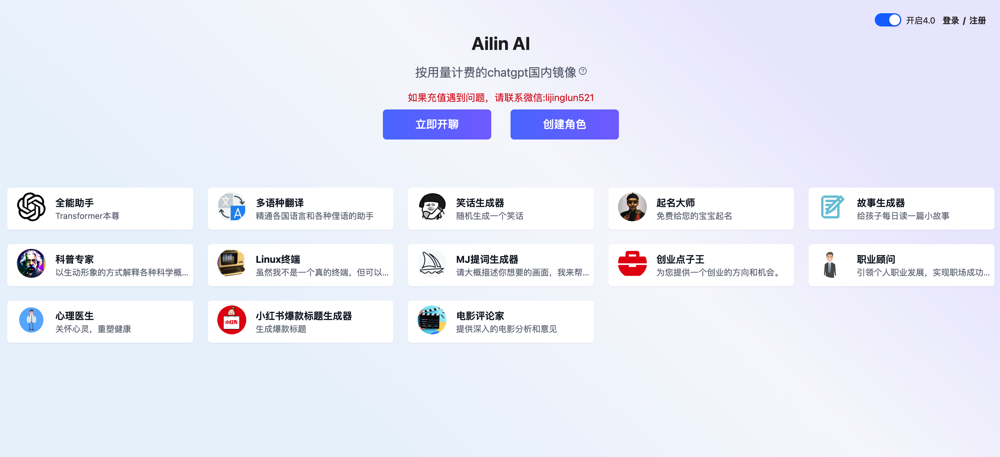
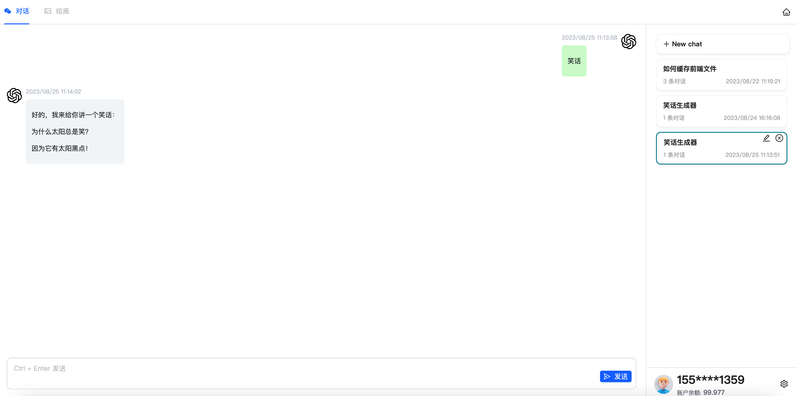

实现一个chatgpt的网站
由于前一段时间离职，处在一个gap期间，每天不是投简历就是刷题看剧陪娃，挺无聊的，无聊刷到一些技术文章，看都在推广自己的chatgpt相关的网站，我想不如自己也弄一个吧！方便自己和他人。
- [x] chatgpt开通api服务
- [x] 云服务器
- [x] 短信服务
- [x] 域名
上面准备工作中，只有开通chatgpt的api算是最高难度的了，国内visa信用卡还不支持，就算是国外也不是所有的信用卡都支持，因此网上有一些虚拟信用卡的开通服务，但是也要慎用。我是找了美国的朋友，用他的信用卡开通。


- EventSource 请求返回拼接遇到空格和特殊字符的问题
- 打字机效果在服务器不显示
- markdown转换效果不理想
- 服务端返回的格式多为：
1
2
3
4
5
6
7
8
9data:
id:
retry:
event:
data:
id:
retry:
event:
有些字段会有换行符和特殊字符，这些字符如何直接格式化后拼接会报错，这种在返回代码中最为明显，所以在返回到了前端处理的时候，要处理一下，我是这么做的，如果可以直接JSON.parse的话，那么就正常取值，如果JSON.parse报错的话，手动截取引号中间的内容返回。
1 | const newReg = (str: string) => { |
打字机效果是文字一个一个出现的效果，这个效果在本地显示的好好的，但是服务器怎么都不显示，在google和github查了很多资料后，终于找到了是因为服务器的nginx的配置导致的，需要更改nginx.config配置。
1
2
3proxy_cache off; # 关闭缓存
proxy_buffering off; # 关闭响应缓存,最主要的代码
chunked_transfer_encoding on; # 开启分块传输编码markdown这个确实是需要自己去处理返回的代码的语言类型，语言内容，我用的是MarkdownIt这个插件，具体实现如下
1 | mdi.renderer.rules.code_inline = function (tokens, idx, options, env, slf) { |
后期还是想接入一下Midjourney的api，并且后端重新使用Nodejs实现一遍；
最后还是放一下链接，欢迎大家注册试玩。
Ailin智能聊天机器人
如果觉得我的文章对您有用，请随意打赏。


感谢您的阅读，本文由 李经纶 版权所有。如若转载，请注明出处：李经纶个人博客（https://lijinglun.com/2023/08/25/实现一个chatgpt的网站/）